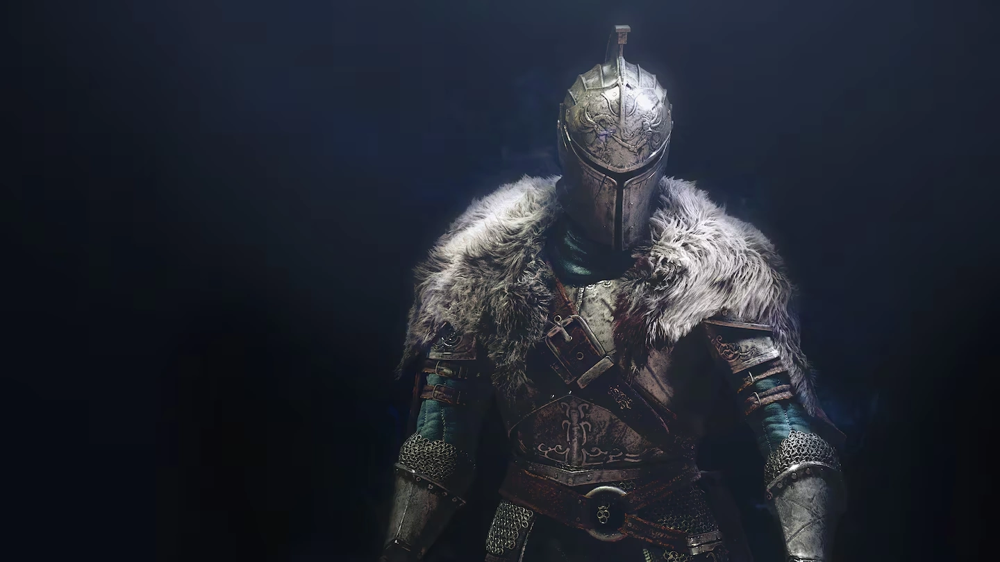

Welcome to the World of Dark Souls 2
Dark Souls 2 is the second game in the Dark Souls Trilogy
Development of the Sequel
Development for Dark Souls 2 had a different team than Dark Souls 1, as that team was working on a different game for the Playstation 4 Exclusively.
Facts about the game and its world
- The game has a ton of replay value through the world constantly changing each time you beat the game or use a specific item.
- Dark Souls 2 has a full rebalance rerelease called Scholar of the First Sin, which changes tons of things about the world, enemy placement, and has the dlc included.
- Before Elden Ring destroyed this number with over 200, Dark Souls 2 had the most bosses of the so called "Soulsborne" series, unless we count Bloodborne's reused bosses for it's dungeon mode.
- Dark Souls 2 allowed you to dual wield, or "power stance", two weapons at the same time, before Dark Souls 3 kinda introduced dual weapons, but they were much more limiting as the weapon itself had to be a dual weapon, before Elden Ring brough this back.
Community's Thoughts on the game
This game is known as the black sheep of the Dark Souls series, with some people thinking it's easily the best, while others think it's easily the worst. Me personally I think I sit more on the side of the game being good, but with the two different versions, it can be hard to really tell, since the gameplay experience can change a ton with both version of the game.